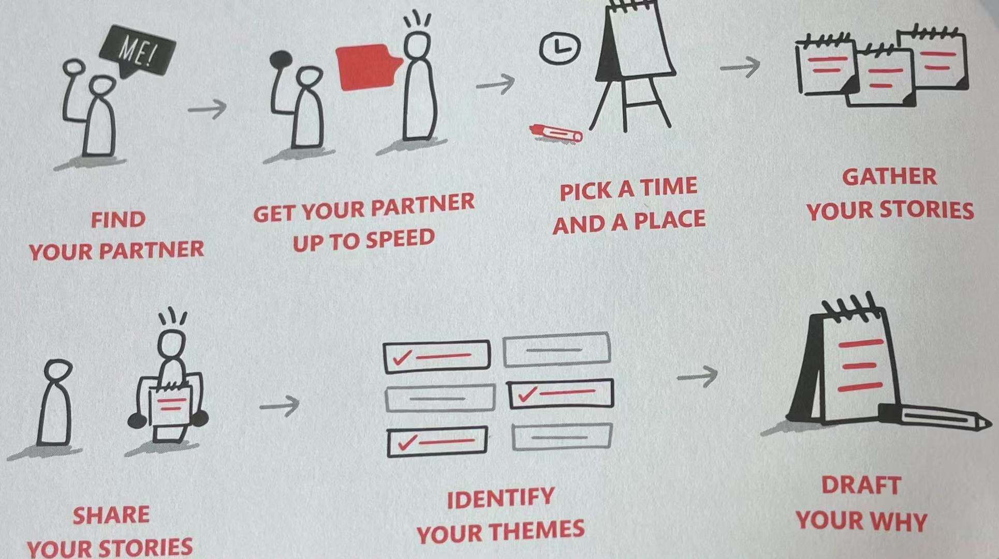
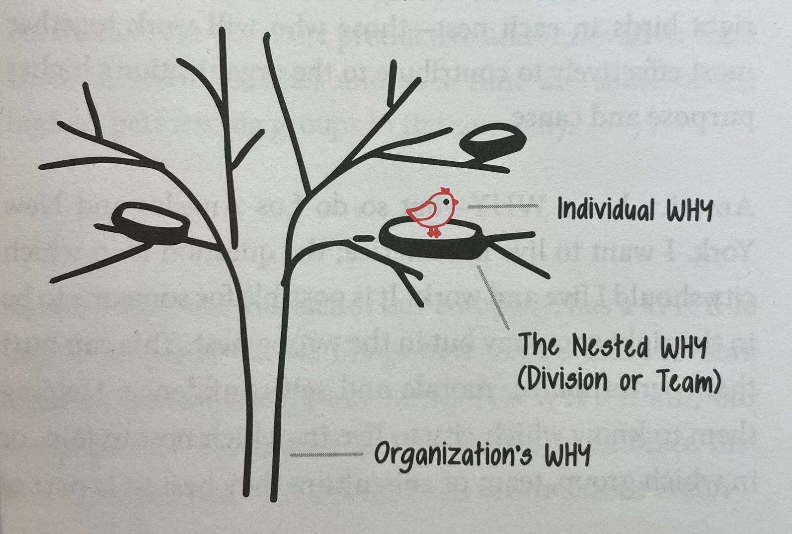

Introduction
5
Your vision is only actionable
if you say it out loud.
if you keep it to yourself,
it will remain a figment
of your imagination.
6 Everyone of us has a WHY, a deep-seated purpose, cause or belief that is the source of our passion and inspiration.
. Fulfillment is deeper. Fulfillment lasts. The difference between happiness and fulfillment is the difference between liking something and loving something. We don't necessary like our kids all the time, for example, but we do love them all the time.
7 Happiness comes from what we do. Fulfillment comes from why we do it.
Chapter 1 Start with Why
19
The opportunity is not to discover the perfect company for ourselves.
The opportunity is to build the perfect company for each other.
Find the Right Fit
24
The WHY exists on a macro level and a micro level. A company has a WHY, each division or team has a WHY, and every individual has a WHY. The opportunity is to make sure the right people are working in the right places in the right company.
25 It would be nice if business was purely science, but it isn't. While some parts of a business are predictable, tangible and easy to measure (think profit, revenues and expenses), the fact is, there are huge parts of a business that are unpredictable, intangible and hard to measure (think vision, inspiration, trust ... and hiring someone to fit the culture). It's not that we don't understand the value of the intangibles; it's that we have trouble explaining wha value is.
26 The WHY is a tool that can bring clarity to that which is fuzzy and make tangible that which is abstract. Used properly, it can be used to hire, to develop strategies and to communicate more clearly (internally and externally). The WHY can help set a vision to inspire people. The WHY can guide us to act with purpose, on purpose.
29
If you want to discover the WHY of the entire organization it will come from one of two sources: The first is from the founder's WHY, which draws from the origin story. If the founder is no longer available, we have a method that engages people in the organization to identify whe WHY based on the best elements of the existing culture.
Chapter 3 Why Discovery for Individuals
35
- simple and clear
- actionable
- focused on the effect you'll have on others, and
- expressed in affirmative language that resonates with you.
Eventually, you will put your Why statement into this format:
TO ____ SO THAT ____.
40
56
Our struggles are the short-term steps we must take on our way to long-term success.
Chapter 4 Why Discovery for Groups
Part 1: The Tribe Approach
Nested WHYs: Define a Part of the Whole
85 An organization has a WHY. And within an organization are teams - subcultures that exist within the larger group. Each of these parts within the whole will have its own WHY. We call that a Nested WHY -- the purpose, cause or belief that defines a subgroup within the larger organization. Then within each of those teams are people who also have their own unique WHY -- their individual WHY. The goal is for each individual to work for a company in which they fit the culture, share the values, believes in the vision and work on a team in which they feel like they are valued and valuable.
104
A team is not a group of people who work together.
A team is a group of people who trust each other.
Chapter 5 Why Discovery for Groups
Part 2: Talking to the Tribe
123
If a movement is to have an impact it must belong to those who join it not just those who lead it.
139
The ability of a group of people to do remarkable things hinges on (取决于) how well those people can pull together as a team.
How to write a Why statement
140
Break down the statement into main elements. The first element, "To ____," is the contribution the organization or group makes. The second element, "so that ____, " is the impact or effect that contribution has on others.
Chapter 6 State Your HOWs
152 As a reminder, the Golden Circle consists of three parts： WHY, HOW and WHAT. All these three parts are equally important. When those three things are in balance we are at our natural best.
Your HOWs Are Your Strengths
153 Your HOWs are the ingredients (要素) you need to be at your best. Together, they are your recipe for success -- your strength. And this is true for both and individual and a tribe.
157
The greatest contribution of a leader is to make other leaders.
HOWs as Filters
158 Once you're stated your HOWs in a simple, actionable way, it's helpful to add a few bullets to clarify what they mean in practice.
Chapter 7 Take a Stand
Do the Things You Say You Believe
Appendix 1: Frequently Asked Questions
For Individuals
214 Can my WHY be my family?
Family inspires great love and commitment, and most of us want very much to care for our spouse or partner and our children. But a WHY is who we are wherever we are -- not just at home, but also at work or out with friends. Though it may seem strange to speak in these terms, family is actually a WHAT. Your WHY will come not from talking about your family, but from talking about the feelings you family evokes in you.
. Can I have more than one WHY?
Nope. Each of us has one WHY and one WHY only.
. As Simon often says, "If you're different at work than you are at home, in one of those two places you're lying."
215 Instead, think about the common factors at home and at work that leave you feeling inspired and fulfilled. That's where you'll get clarity of your WHY.
. Can my WHY changes as I get order?
Our WHY is fully formed by our mid-to late-teens. By that age we've experienced enough and made enough choices of our own that we can recognize the situations in which we'll thrive and those in which we will not. But while you may have sensed your WHY at that age, you probably weren't able to express it.
. The words you use may change, but your WHY will not.
216 What if I don't have a WHY?
You do have a WHY. Everyone does. The only question is whether you're willing to let yourself be open and vulnerable enough to discover what it is. As long as you are honest with yourself and others, you will discover your WHY.
217 What's the reason the WHY is always in service to others?
It comes down to the difference between happiness and fulfillment. Happiness comes from the things we do for ourselves, such as buying a new pair of shoes or the latest smartphone, and can offer a quick hit of dopamine that makes us feel good. But when that feeling wears off, we need to do or buy something else to get the next hit. Shopping (or jogging or drinking wine or sailing or whatever else) may give us fleeting (lasting for a very short time) happiness but will never give us lasting fulfillment. The happiness in serving ourselves is real but often fleeting; the fulfillment in serving others is lasting. The problem comes when there's a lack of balance between the pursuit of happiness and the pursuit of fulfillment. That's not just philosophy; it's biology.
218 We've met plenty of people over the years who, despite high salaries and the luxurious lifestyles that money can buy, aren't truly fulfilled and feel that there's something missing in their lives. Ironically, people whose WHY is in service to others, rather than for themselves, are the ones who ultimately best serve themselves, because in the end they experience the deepest fulfillment.
. How can I make my WHY sound different from everyone else's?
This question stems from (源于) the perception that we are all competing and somehow our WHY has to be better than, or at least different from, that of our rivals. (竞争对手)
219 When we are truly connected to our WHY and the stories from our past that have led to its discovery, it doesn't matter if our WHY sounds like someone else's. It's ours and it has deep meaning to us. It represents who we are at our very best.
. If my WHY doesn't align with the work I'm doing, do I have to quit?
We don't have to do anything. The short answer to this question is ... maybe. If your work and your WHY aren't aligning, you don't necessarily have to throw everything away. ` :hlr:`We can't always control the environment we're in, but we can take responsibility for the way we show up. Your first step should be to positively influence those around you every day. Start by living your WHY the best way you can. It's just possible that, if you do, things will begin to change for the better.
220 If that doesn't work, it's important to remember that our goal is to surround ourselves with people who believe what we believe. If that simply isn't possible where you are, you have a choice to make. You can actively look for a job that's more in line with your WHY. Or you can try to make the best of where you are. Just remember, moving toward something (e.g, a situation in which you can thrive (茁壮成长) and live your WHY) is always better than moving away from something (e.g., a situation that isn't working for you).
. My boss(or significant other, or sister or best friend) really needs to do a Why Discovery! How can I make that happen?
You're probably right that this person would benefit. However, it's not up to you to convince others. They have to feel that Why Discovery would be right for them. One way we can inspire them to do a discovery is to live our own WHY. They may see the fulfillment you find through what you've learned and choose to find out more. Or they may not. We can lead a horse to water and even shove (猛推) its head in the trough (槽) -- but that just drowns (淹死) the horse.
221 I want to live my WHY but I'm not getting what I need for me to be at my best.
. The first: if you're implying that there's a tangible WHAT that's necessary for you to live your WHY, you're wrong. None of us needs any specific job, position, title, technology or piece of equipment in order to effect the change we want to see in the world.
. But perhaps you are speaking of something intangible -- an emotional or relationship need, for instance, that is not being met. Sometimes the people around us don't actually know what we need, which makes it difficult for them to give it to us! If that's the case, you should share your WHY with them and let them know what you need from an emotional or relationship standpoint in order to be at your best.
For Organizations
222 What do we do if our product doesn't fit our WHY?
If we sell a product or service that is inconsistent with what we believe, it will be inauthentic, and our employees and customers will eventually see and, more important, feel that.
223 Sometimes it makes sense to retire a product or spin off a division that doesn't fit. The idea is to spend energy in places that have the greatest positive impact.
Can a WHY be "to make money"?
No. We all know organizations out there whose sole reason for existing is to make money. But that's not their WHY. "To make money" doesn't fulfill any higher purpose. It's just a result. And organizations that define their WHY as a result tend not to be great places to work. Profit-driven companies may come out financially ahead of WHY-driven organizations in the short term, but their success is unsustainable. Over the long term, they cannot command the kind of loyalty, trust and innovation that an organization with a purpose can.
226 Can we adjust our WHY to suit our customers?
. What makes a WHY powerful is its authenticity. Neither employees nor clients are fooled when an organization attempts to manufacture a WHY to suit what they feel customers wants to hear. This is manipulation. The people you do business with, and the people who work with you, will sense a disconnect. Trust and loyalty will diminish (if they ever existed). When that happens, the company often resorts to discounts and other forms of manipulations to try to convince customers and employees to stay. This may work in the short term but it has no hope of long-term success.
This is not to say that a WHY-based organization can't use marketing effectively. Of course it can! In fact, when marketing uses the WHY as its sources, it works quite well. An organization's branding simply becomes an external expression of its WHY, a proof of the company's culture.